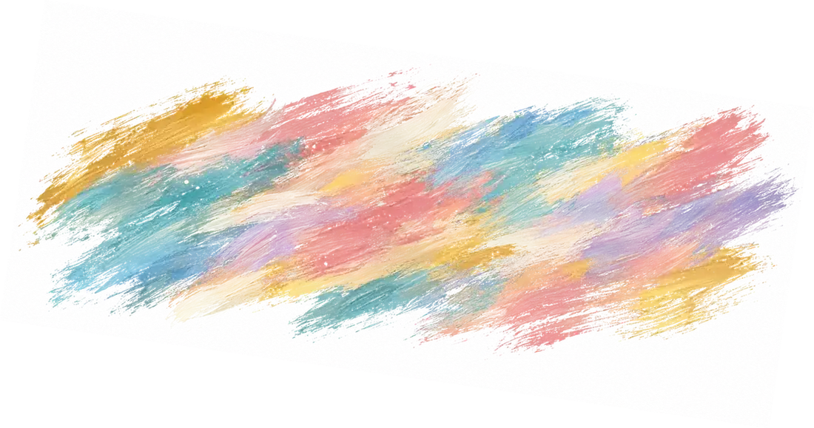
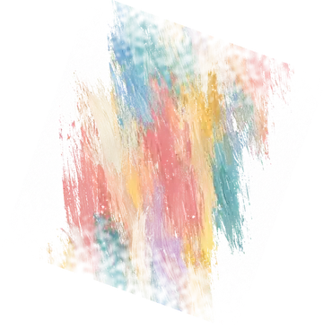
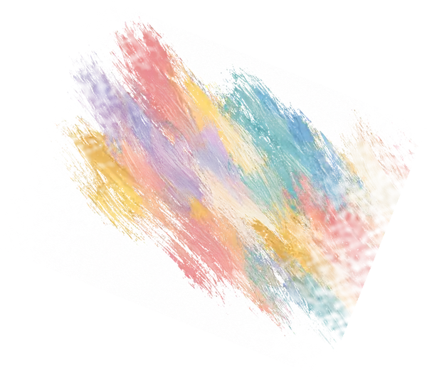
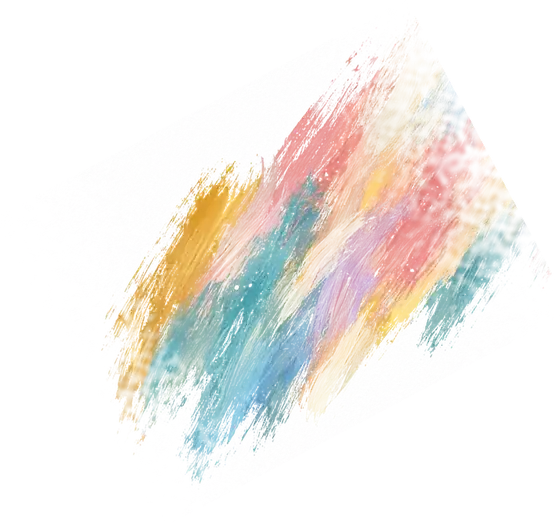

Psicología
Abordaje de emociones, conducta y vínculos, con espacios de orientación para la familia.
Suele consultarse por: ansiedad, berrinches, dificultades en la conducta.


Psicología, fonoaudiología, psicopedagogía y terapia ocupacional coordinadas en un mismo equipo, con un plan de trabajo compartido con la familia y la escuela.
Juntos potenciamos habilidades


Elegí lo que más se parece a lo que ves en casa o en la escuela. Te mostramos qué área suele acompañar eso.
Trabaja el lenguaje, el habla y la comunicación: desde las primeras palabras hasta poder contar lo que le pasa.
Es una orientación, no un diagnóstico. En la entrevista de admisión lo vemos juntos, y muchas veces trabajan dos o más áreas a la vez.
Cada niño tiene un equipo de referencia. Los profesionales comparten observaciones y revisan los objetivos en conjunto, para que la familia no tenga que coordinar entre consultorios.
Abordaje de emociones, conducta y vínculos, con espacios de orientación para la familia.
Suele consultarse por: ansiedad, berrinches, dificultades en la conducta.
Evaluación y tratamiento del lenguaje, el habla y la comunicación.
Suele consultarse por: retraso del lenguaje, dificultades para hacerse entender.
Acompañamiento de los procesos de aprendizaje y la experiencia escolar.
Suele consultarse por: lectoescritura, atención, rendimiento escolar.
Autonomía en la vida diaria, motricidad e integración sensorial.
Suele consultarse por: hábitos, motricidad fina, sensibilidad a estímulos.
Taller grupal para niños y adolescentes, con objetivos de interacción y comunicación.
Suele consultarse por: dificultades para vincularse con pares.
Evaluación de funciones cognitivas para orientar el diagnóstico y el plan de tratamiento.
Suele consultarse por: necesidad de un diagnóstico o de un informe.
Además de cada área, el equipo comparte enfoques que ordenan el tratamiento, suman a la familia y conectan con la escuela.
Trabaja la relación entre lo que el niño piensa, siente y hace, con estrategias concretas para el día a día.
Espacios para la familia con pautas y acompañamiento, para sostener en casa lo que se trabaja en sesión.
Un abordaje entre varias áreas, con objetivos claros que se revisan con la familia.
Reuniones e informes con docentes y equipos de inclusión, para que todos vayan en la misma dirección.
Encuentros en grupo para compartir dudas y llevarse herramientas para la vida cotidiana.
Preparamos los informes que piden el trámite del CUD y la obra social.
Ayuda a organizar cómo procesa sonidos, texturas y movimiento.
Evaluación que describe cómo responde a los estímulos y orienta el plan.
No hace falta un diagnóstico previo para consultar. El proceso empieza escuchando a la familia.
Nos escribís por WhatsApp con la edad, el motivo de consulta y si cuenta con CUD.
Una entrevista con la familia para conocer la historia y el motivo de consulta.
Las áreas que correspondan evalúan con instrumentos acordes a cada caso.
Definimos objetivos, frecuencia y terapias, y los revisamos periódicamente con la familia.
Pequeños avances, grandes logros
Sin Límites reúne a profesionales de distintas disciplinas que trabajan en conjunto alrededor de cada niño, su familia y su escuela. Dos coordinadoras acompañan al equipo y a cada familia.
Consultanos por WhatsApp y te orientamos sobre la documentación necesaria.
Atención de niños y adolescentes con Certificado Único de Discapacidad, gestionada a través de la obra social.
Para quienes no cuentan con CUD o lo están tramitando. Consultá aranceles por WhatsApp.
En Calle 143 N.º 1624, Berazategui, a 4 cuadras de la estación de tren.
Sí, con CUD a través de la obra social. También atendemos en forma particular.
Niños y adolescentes. Ante dudas sobre una edad puntual, consultanos.
No. Si hace falta, la evaluación se realiza en el espacio.
Por WhatsApp, a cualquiera de los dos números: 11 3142-9090 o 11 6025-9276. También podés escribir a consultas@sinlimitesterapias.com.ar.
Respondemos por WhatsApp y coordinamos el primer encuentro con la familia.